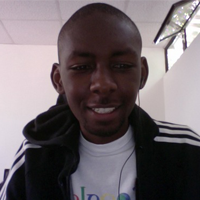

THE PROGRAM
Code4Kenya (C4K) is a Pilot program and a global first. Jointly financed by the World Bank and the Africa Media Initiative, C4K will embed 4 fellows in Media and Civil Society Organizations, backed by external software development team that are housed at an incubation facility.
The program will run for a duration of 5 months starting from the 1st of July to the 30th of November. During this period, both the Developers and the Fellows will work towards a number of objectives such as getting the host’s to understand the value of Open Data Ecosystems to their Organisations, Conduct assessments on the level of investment and understanding the host Organization needs to create in house capacity and Data Desks,Creating Data Portals that allow Organizations to open up their Data and derive the benefits from partnerships with Developers and create a sustainable application or service within the 5 month pilot period.
What We Offer
We will pay the chosen Developers and Fellows a stipend for the entire duration of the Program. This is a fully funded pilot program.
Developers will be housed at an incubation facility for the duration of the program to support the Fellows who will be embedded in the Host Organization.
Access to a selected group of thematic experts and mentors from Government, Civil Society and Private Institutions, that will guide the Fellows and Developers through the process.
The opportunity to be part of a World first pilot program.
Contribution to be part of sustaining the Open Data Platform and Initiative in Kenya.
Be a change agent and create a revolution in Media and CSO’s in embracing Open Data.
THE TEAM
Leadership
- Project Manager, Code4Kenya
Director, Open Institute"/> - Project Manager, Code4Kenya
Project Manager, African Media Initiative" id="portrait" />
Fellows
- Lead Fellow, Code4Kenya
Co-Founder SemaCraft" id="portrait"/> - Fellow, Code4Kenya
Urban Planning Specialist" id="portrait"/> - Fellow, Code4Kenya
Co-Founder Story Spaces" id="portrait"/> - Fellow, Code4Kenya
Geo Spacial Specialist" id="portrait"/>
Developer Team
- Developer, Code4Kenya
Co-Founder Ufahamu.or.ke" id="portrait"/> - Developer, Code4Kenya
Fmr. CTO, Bohn Solutions" id="portrait"/> - Developer, Code4Kenya
BigData Enthusiast"/> - Lead Developer, Code4Kenya
OpenData Evangelist"/>
Thematic Areas
Health
Water
Education
Counties
Code4Kenya Applications
FAQ
Want to know more about the Code4Kenya Pilot Program? We’ve put together an FAQ below of some suggested questions you may ask, but if you have additional questions please send us an email or tweet us at @Code4Kenya, and we'll get you squared away.
What is the Code4Kenya Pilot Program?
The Code4Kenya Pilot Program is a 5 month program that will see selected Fellows be housed in host Organizations. For this pilot the host Organizations will be Media and Civil Society. The Fellows are then supported by a 4 man development team that is Housed in an incubator space. The development team will provide software development support along with supporting the Host Organizations with advice on creating in-house data teams..
What are the Objectives of the Program?
The Objectives of the Code4Kenya Program is to create a sustainable ecosystem around the Kenya Open Data Initiative, that will allow Organizations, Developers and the Community at large derive the advantages that an Open Data Initiative provides. The Program aims to create an ecosystem that will positively affect both the supply and the demand side of Data.
Are the Host Organizations only Media and CSO’s?
Yes. Initially for this pilot project the Host Organizations are Media and CSO’s. Once we have proven the model we will be able to roll out this program to other channels like Government Agencies, Municipal Councils and other Corporate Institutions.